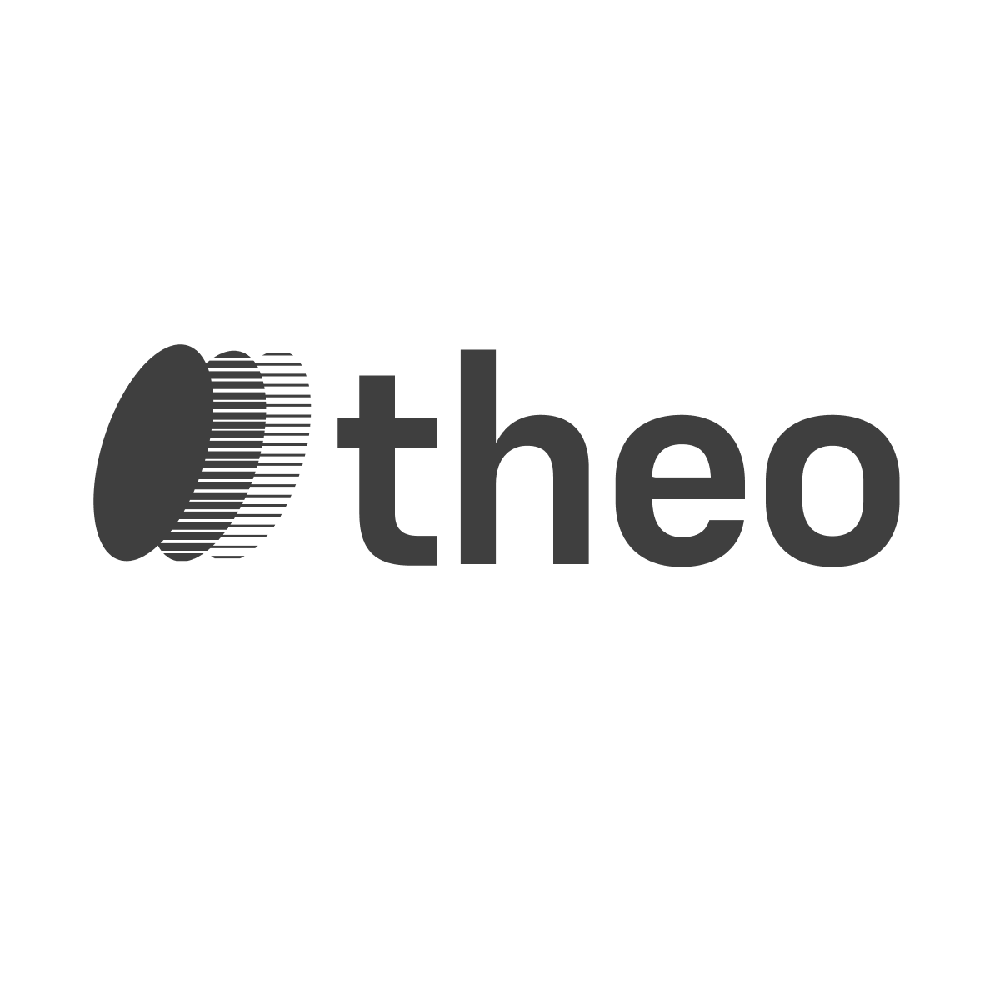
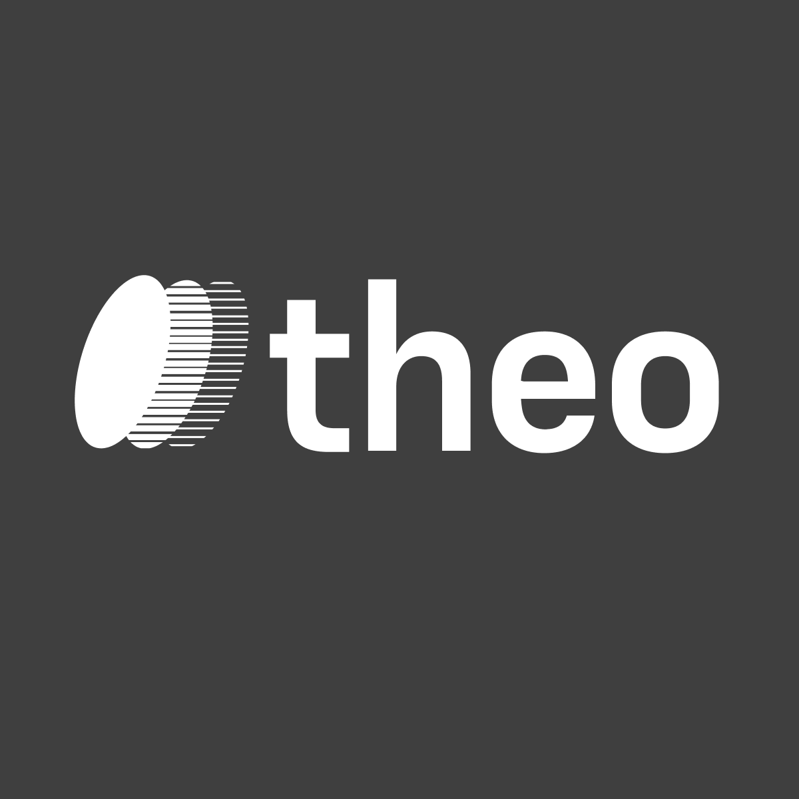

Agent voice. Use anywhere THEO is speaking,
listening, or being summoned — not for the platform.
theo · agent voice

on light
Inverse — same use cases on dark surfaces.
Pairs with the THEOS platform mark, never replaces it.
theo · agent voice

on dark